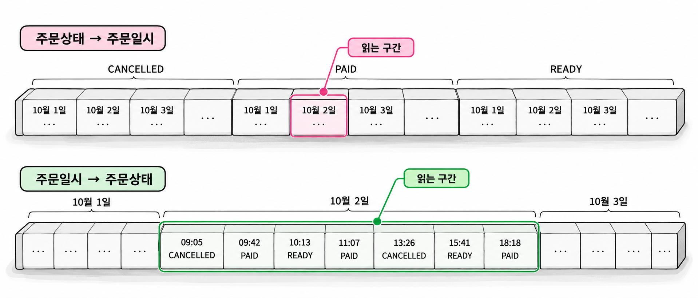

13장. 복합 인덱스와 탐색 범위 튜닝이란?
복합 인덱스는 같은 컬럼을 포함해도 컬럼 순서에 따라 읽는 구간이 달라집니다. 조건에 맞는 행을 찾았다는 사실만으로는 효율을 판단하기 어렵습니다. 그 행을 찾기까지 인덱스 블록을 얼마나 읽었는지도 확인해야 합니다.
이 장에서는 주문 상태와 주문일시를 함께 검색하는 사례를 사용합니다. 같은 결과를 반환하는 두 인덱스를 비교하며 컬럼 순서가 탐색 범위에 미치는 영향을 확인합니다.
1. 컬럼 순서와 탐색 시작점
1.1 선두 컬럼과 조건 조합
복합 인덱스의 키는 첫 번째 컬럼부터 차례로 정렬됩니다. 첫 번째 값이 같으면 두 번째 값으로 순서를 정합니다. 두 번째 값도 같으면 세 번째 값을 비교합니다.
인덱스가 (회원번호, 주문일시, 주문번호) 순서라면 같은 회원의 주문이 모입니다. 그 안에서는 주문일시 순으로 배치됩니다. 주문일시까지 같으면 주문번호로 순서가 정해집니다.
이때 선두 컬럼은 회원번호입니다. 회원번호와 주문일시처럼 맨 앞부터 끊기지 않고 이어지는 컬럼 조합은 탐색 범위를 정하는 데 유리합니다. Oracle도 복합 인덱스의 전체 컬럼이나 선두부터 이어지는 컬럼을 사용하는 조회에 이러한 인덱스가 도움이 된다고 설명합니다. Oracle Database Concepts
| 검색 조건 | 일반적인 탐색 특성 |
|---|---|
| 회원번호가 같음 | 해당 회원의 주문 구간을 탐색합니다. |
| 회원번호가 같고 주문일시가 일정 범위임 | 해당 회원의 주문 중 지정한 기간을 탐색합니다. |
| 회원번호와 주문번호가 같음 | 회원 구간은 정할 수 있지만, 중간의 주문일시 조건이 없어 주문번호로 구간을 충분히 좁히기 어렵습니다. |
| 주문일시만 일정 범위임 | 여러 회원에 흩어진 기간 데이터를 찾아야 합니다. |
선두 컬럼 조건이 없다고 인덱스를 전혀 사용하지 못하는 것은 아닙니다. 앞 장에서 다룬 Index Skip Scan이나 인덱스 전체 스캔이 선택될 수 있습니다. 다만 선두 컬럼 값 하나로 좁은 구간을 바로 찾는 탐색과는 비용이 다릅니다.
WHERE 절에 조건을 적는 순서는 인덱스 컬럼 순서와 별개입니다. 회원번호 조건을 앞에 쓰든 뒤에 쓰든 인덱스의 정렬 구조는 바뀌지 않습니다.
1.2 동등 조건·범위 조건의 배치
동등 조건은 =처럼 값을 하나로 고정하는 조건입니다. 범위 조건은 >=, <처럼 여러 값에 걸친 구간을 지정하는 조건입니다.
주문 상태가 PAID이고 주문일시가 하루 범위에 해당하는 주문을 찾는다고 가정합니다. 다음 두 인덱스는 같은 컬럼을 포함하지만 정렬 순서가 다릅니다.
| 인덱스 순서 | 키의 배치 | 기본적으로 읽게 되는 구간 |
|---|---|---|
(주문상태, 주문일시) | 상태별로 모인 뒤 일시순 정렬 | PAID 안의 하루 구간 |
(주문일시, 주문상태) | 일시순으로 모인 뒤 상태순 정렬 | 하루 구간에 섞인 여러 상태 |
첫 번째 인덱스에서는 상태를 하나로 고정한 뒤 기간을 지정합니다. 필요한 키가 하나의 연속된 좁은 구간에 모입니다.
두 번째 인덱스에서는 주문일시가 바뀔 때마다 여러 상태가 나타날 수 있습니다. 기간 안에서 PAID만 고르더라도 다른 상태의 키가 있는 리프 블록을 함께 읽을 수 있습니다.

그림 13-1처럼 동등 조건 컬럼을 먼저 두면 탐색 범위를 줄이기 쉽습니다. 이 순서는 특정 조건 조합의 인덱스를 설계할 때 출발점으로 삼을 수 있습니다. 다른 SQL의 검색 조건과 정렬 요구까지 고려한 최종 결정은 3절에서 다룹니다.
1.3 선택도만으로 순서를 정할 수 없는 이유
선택도가 낮은 조건은 전체 행 중 적은 행을 남깁니다. 그러나 적은 행을 남기는 컬럼을 항상 인덱스 맨 앞에 두는 것은 적절하지 않습니다.
전체 주문이 100만 건이고 하루 주문이 1만 건이라고 가정합니다. PAID 주문은 전체의 10%인 10만 건입니다. 하루 주문 중에도 PAID가 10%라면 최종 결과는 1천 건입니다.
| 조건 | 조건을 단독으로 적용했을 때의 행 수 |
|---|---|
| 주문일시가 하루 범위 | 10,000 |
주문상태가 PAID | 100,000 |
| 두 조건을 함께 적용 | 1,000 |
주문일시 조건이 단독으로는 더 적은 행을 남깁니다. 그래도 (주문상태, 주문일시) 인덱스는 PAID의 하루 구간을 바로 찾을 수 있습니다. 반면 (주문일시, 주문상태)는 하루 구간 안에서 상태를 걸러야 할 수 있습니다.
반대로 주문 상태 없이 기간만 검색하는 SQL이 많다면 주문일시가 선두인 인덱스가 유리할 수 있습니다. 컬럼 순서는 개별 컬럼의 선택도와 자주 사용하는 조건 조합을 함께 보고 판단합니다.
2. 읽는 인덱스 구간 줄이기
2.1 접근 조건·인덱스 필터·테이블 필터
검색 조건은 어느 단계에서 적용되는지에 따라 읽기 비용에 미치는 영향이 다릅니다.
인덱스 필터(index filter)는 인덱스에 저장된 값으로 후보를 거르는 조건입니다. 인덱스에서 탈락한 행은 테이블을 방문하지 않아도 됩니다. 테이블 필터(table filter)는 테이블 행을 읽은 뒤 적용하는 조건입니다.
| 구분 | 조건이 하는 일 | 주로 줄이는 작업 |
|---|---|---|
| 접근 조건 | 탐색할 키와 범위를 정합니다. | 불필요한 인덱스 구간 탐색 |
| 인덱스 필터 | 읽은 인덱스 항목에서 후보를 거릅니다. | 테이블 방문 |
| 테이블 필터 | 읽은 테이블 행에서 결과를 거릅니다. | 상위 연산으로 넘기는 행 |
실행 계획에서는 Predicate Information의 조건을 연산 번호와 함께 읽습니다. 인덱스 연산에 붙은 filter와 테이블 연산에 붙은 filter를 구별해야 합니다.
다만 실행 계획의 access 표시만으로 읽는 구간의 크기를 단정해서는 안 됩니다. 복합키의 경계를 정하는 조건과 구간 내부에서 거르는 조건이 함께 표시될 수 있습니다. 키 정렬 순서와 실제 읽기량을 함께 확인해야 합니다.
다음 실습은 이전 장의 테이블과 구분하기 위해 ch13_orders를 사용합니다. 실습 PDB의 본인 스키마에서 실행합니다. 처음 준비할 때만 실행합니다. 같은 이름의 테이블이 이미 있으면 기존 실습 객체인지 확인합니다.
예제 13-1 — 컬럼 순서 비교용 주문 데이터 준비하기
파일명: ch13_setup.sql
CREATE TABLE ch13_orders (
order_id NUMBER NOT NULL,
member_id NUMBER NOT NULL,
order_status VARCHAR2(12) NOT NULL,
ordered_at DATE NOT NULL,
total_amount NUMBER(12, 2) NOT NULL,
CONSTRAINT pk_ch13_orders PRIMARY KEY (order_id)
);
INSERT INTO ch13_orders (
order_id,
member_id,
order_status,
ordered_at,
total_amount
)
SELECT
n,
MOD(n - 1, 20000) + 1,
CASE
WHEN MOD(n - 1, 10) = 0 THEN 'PAID'
WHEN MOD(n - 1, 10) < 7 THEN 'READY'
ELSE 'CANCELLED'
END,
DATE '2026-10-01' + (n - 1) / 10000,
1000 + MOD(n, 100) * 100
FROM (
SELECT LEVEL AS n
FROM dual
CONNECT BY LEVEL <= 1000000
);
COMMIT;
CREATE INDEX ix_ch13_status_time
ON ch13_orders (order_status, ordered_at);
CREATE INDEX ix_ch13_time_status
ON ch13_orders (ordered_at, order_status);
BEGIN
DBMS_STATS.GATHER_TABLE_STATS(
ownname => USER,
tabname => 'CH13_ORDERS',
estimate_percent => DBMS_STATS.AUTO_SAMPLE_SIZE,
method_opt => 'FOR ALL COLUMNS SIZE 1',
cascade => TRUE
);
END;
/
SELECT
COUNT(*) AS total_rows,
COUNT(CASE
WHEN ordered_at >= DATE '2026-10-02'
AND ordered_at < DATE '2026-10-03'
THEN 1
END) AS day_rows,
COUNT(CASE
WHEN ordered_at >= DATE '2026-10-02'
AND ordered_at < DATE '2026-10-03'
AND order_status = 'PAID'
THEN 1
END) AS paid_day_rows
FROM ch13_orders;실행 결과
마지막 조회의 값은 다음과 같습니다.
TOTAL_ROWS DAY_ROWS PAID_DAY_ROWS
---------- -------- -------------
1000000 10000 1000데이터는 하루에 1만 건씩 배치됩니다. 상태는 열 건마다 같은 비율로 반복됩니다. 기간과 상태의 조합을 일정하게 만들어 인덱스 순서의 차이를 비교하기 위한 데이터입니다.
통계 수집에서는 히스토그램을 만들지 않도록 지정했습니다. 실제 업무 데이터의 분포를 그대로 재현한 것은 아닙니다. 따라서 이 실습의 결과를 모든 주문 시스템에 적용해서는 안 됩니다.
2.2 범위 조건 뒤 컬럼의 역할
범위 조건 뒤에 놓인 컬럼도 사용할 수 있습니다. 다만 그 컬럼이 읽는 인덱스 구간을 줄이는지, 테이블에 넘길 후보만 줄이는지를 구별해야 합니다.
(주문일시, 주문상태) 인덱스에서 하루 범위를 검색하면 PAID가 여러 시각에 흩어져 있습니다. 상태 조건으로 후보를 걸러도 하루에 해당하는 리프 구간은 넓게 읽을 수 있습니다.
그렇다고 주문상태 컬럼이 쓸모없는 것은 아닙니다. 상태를 인덱스에서 확인하면 다른 상태의 주문을 읽으려고 테이블을 방문하는 일을 줄일 수 있습니다. 뒤쪽 컬럼이 탐색 경계 일부를 좁히는 경우도 있습니다. 따라서 “범위 조건 뒤 컬럼은 항상 필터로만 쓰인다”는 설명은 지나친 단정입니다.
다음 예제는 테이블 접근의 영향을 줄이기 위해 COUNT(*)로 비교합니다. 검색에 필요한 두 컬럼이 두 인덱스에 모두 있습니다. 인덱스만으로 처리되는 계획에서 탐색 범위 차이를 관찰할 수 있습니다.
예제 13-1을 먼저 실행해야 합니다. 실행 계획은 11장 2.2항의 공통 실행 방법으로 확인합니다. 두 집계 SQL에 서로 다른 고유 주석을 붙이고 각 커서의 식별자와 자식 커서 번호를 지정합니다.
예제 13-2 — 같은 결과를 반환하는 두 인덱스의 읽기량 비교하기
이어서: 예제 13-1
파일명: ch13_compare.sql
SELECT /*+ GATHER_PLAN_STATISTICS
INDEX_RS_ASC(o ix_ch13_status_time) */
COUNT(*) AS paid_orders
FROM ch13_orders o
WHERE o.order_status = 'PAID'
AND o.ordered_at >= DATE '2026-10-02'
AND o.ordered_at < DATE '2026-10-03';
SELECT *
FROM TABLE(
DBMS_XPLAN.DISPLAY_CURSOR(
NULL,
NULL,
'ALLSTATS LAST +PREDICATE +ALIAS +HINT_REPORT'
)
);
SELECT /*+ GATHER_PLAN_STATISTICS
INDEX_RS_ASC(o ix_ch13_time_status) */
COUNT(*) AS paid_orders
FROM ch13_orders o
WHERE o.order_status = 'PAID'
AND o.ordered_at >= DATE '2026-10-02'
AND o.ordered_at < DATE '2026-10-03';
SELECT *
FROM TABLE(
DBMS_XPLAN.DISPLAY_CURSOR(
NULL,
NULL,
'ALLSTATS LAST +PREDICATE +ALIAS +HINT_REPORT'
)
);실행 결과
두 집계 SQL의 결과는 같습니다.
PAID_ORDERS
-----------
1000실행 계획에서는 다음 내용을 확인합니다.
| 확인 대상 | 비교할 내용 |
|---|---|
| 인덱스 이름 | 각 SQL이 지정한 인덱스를 사용했는지 |
| 접근 방식 | INDEX RANGE SCAN으로 실행되었는지 |
| 테이블 접근 | 테이블 접근 연산이 없는지 |
인덱스 연산의 A-Rows | 집계 연산에 넘긴 행 수가 1,000인지 |
인덱스 연산의 Buffers | 같은 결과를 위해 읽은 블록 수가 어떻게 다른지 |
일반적으로 상태가 선두인 인덱스가 더 좁은 구간을 읽습니다. 정확한 Buffers 값은 블록 크기와 인덱스 구조 등에 따라 달라지므로 고정값으로 제시하지 않습니다.
인덱스 연산의 A-Rows는 두 경우 모두 1,000일 수 있습니다. A-Rows는 해당 연산이 반환한 행 수입니다. 내부에서 검사한 모든 인덱스 항목 수를 뜻하지는 않습니다. 따라서 반환 행 수가 같아도 읽기량은 다를 수 있습니다.
예제의 힌트는 두 탐색 경로를 비교하기 위한 실습 장치입니다. 계획과 Hint Report에서 적용 여부를 확인합니다. 기대한 경로가 아니면 읽기량을 비교하기 전에 원인을 확인해야 합니다.
2.3 IN 목록과 반복 탐색 비용
IN은 여러 값을 검색 조건으로 지정합니다. 선두 컬럼의 IN 조건을 여러 번의 탐색으로 처리하면 각 값에 대해 뒤쪽 컬럼의 범위를 좁힐 수 있습니다.
다음은 상태가 선두인 인덱스로 두 상태의 하루 주문을 조회하는 코드입니다.
코드 조각
SELECT /*+ GATHER_PLAN_STATISTICS
INDEX_RS_ASC(o ix_ch13_status_time) */
COUNT(*)
FROM ch13_orders o
WHERE o.order_status IN ('PAID', 'READY')
AND o.ordered_at >= DATE '2026-10-02'
AND o.ordered_at < DATE '2026-10-03';실행 계획에 INLIST ITERATOR가 나타나면 목록 값을 바꾸면서 하위 연산을 반복하는 구조입니다. 이 경우 인덱스 탐색은 PAID의 하루 구간과 READY의 하루 구간으로 나뉠 수 있습니다.
탐색 구간을 나누면 각 구간은 좁아집니다. 대신 탐색을 시작하는 작업이 반복됩니다. 목록 값이 많아지면 반복 비용이 커질 수 있습니다. 여러 컬럼에 IN 조건이 있으면 탐색 조합이 늘어날 가능성도 있습니다.
실행 계획에서 INLIST ITERATOR, 하위 인덱스 연산의 Starts, 전체 Buffers를 함께 확인합니다. IN 목록의 길이만 보고 반복 횟수를 단정하지 않습니다. 옵티마이저가 다른 접근 경로나 변환을 선택할 수도 있기 때문입니다.
연속된 범위 조건을 무조건 긴 IN 목록으로 바꾸는 것은 적절하지 않습니다. 값이 빠지면 결과가 달라집니다. 탐색 횟수가 늘어 오히려 느려질 수도 있습니다.
3. 여러 SQL을 함께 고려한 인덱스 설계
3.1 검색 조건·조인·정렬 요구의 조합
하나의 SQL에 가장 좋은 인덱스가 전체 업무에도 가장 좋은 것은 아닙니다. 자주 실행되는 SQL을 모아 검색 조건, 조인 컬럼, 정렬 요구를 함께 기록합니다.
회원별 주문 조회와 전체 결제 완료 주문 조회를 운영한다고 가정합니다.
| SQL | 주요 검색 조건 | 정렬 요구 | 검토할 인덱스 후보 |
|---|---|---|---|
| 회원 주문 목록 | 회원번호 =, 주문일시 범위 | 주문일시, 주문번호 | (회원번호, 주문일시, 주문번호) |
| 회원의 특정 상태 주문 | 회원번호 =, 상태 =, 주문일시 범위 | 주문일시, 주문번호 | (회원번호, 상태, 주문일시, 주문번호) |
| 전체 결제 완료 주문 | 상태 =, 주문일시 범위 | 주문일시, 주문번호 | (상태, 주문일시, 주문번호) |
회원번호는 단독 검색값일 수도 있고, 회원 테이블에서 전달받는 조인 값일 수도 있습니다. 같은 컬럼도 인덱스 탐색 시점에 어떤 값이 주어지는지에 따라 활용 방식이 달라집니다.
정렬 요구도 컬럼 순서에 영향을 줍니다. (회원번호, 상태, 주문일시)에서 회원번호만 고정하면 상태별로 주문일시 순서가 됩니다. 여러 상태를 합친 전체 주문일시 순서와는 다릅니다.
인덱스 순서가 정렬 요구와 맞으면 정렬 작업을 줄일 가능성이 있습니다. 다만 결과 순서는 반드시 ORDER BY로 지정합니다. 정렬 연산을 실제로 생략했는지는 실행 계획으로 확인합니다.
3.2 공통으로 사용할 인덱스와 별도 인덱스
회원 주문 목록에는 (회원번호, 주문일시)가 자연스러운 후보입니다. 상태 조건이 추가되어도 이 인덱스로 회원과 기간을 좁힌 뒤 상태를 확인할 수 있습니다.
회원 한 명의 하루 주문이 몇 건뿐이라면 별도 인덱스가 없어도 충분할 수 있습니다. 반면 특정 회원에게 주문이 집중되고 상태 조건으로 대부분을 제외한다면 상태를 앞쪽에 포함한 인덱스가 도움이 될 수 있습니다.
| 설계안 | 기대 효과 | 확인할 비용 |
|---|---|---|
(회원번호, 주문일시)를 공통 사용 | 회원·기간 조회를 하나의 인덱스로 지원합니다. | 상태 확인을 위해 읽는 후보가 많을 수 있습니다. |
(회원번호, 주문일시, 상태)로 확장 | 상태를 인덱스에서 확인할 수 있습니다. | 인덱스 구간은 여전히 넓게 읽을 수 있습니다. |
(회원번호, 상태, 주문일시)를 별도 추가 | 상태까지 지정한 조회의 범위를 줄이기 쉽습니다. | 저장공간과 쓰기 비용이 추가됩니다. |
두 번째와 세 번째 설계안은 역할이 다릅니다. 뒤에 상태를 넣는 방법은 테이블 방문을 줄이는 데 도움이 됩니다. 상태를 주문일시 앞에 넣는 방법은 특정 상태를 조회할 때 인덱스 구간 자체를 줄이는 데 유리합니다.
공통 인덱스를 고를 때는 실행 빈도와 응답 시간 요구를 함께 봅니다. 드물게 실행되는 조회 하나를 위해 모든 주문 입력에 추가 비용을 부과할 가치가 있는지도 판단해야 합니다.
기존 인덱스가 새 인덱스의 선두 부분과 같아도 바로 제거하지 않습니다. 짧은 인덱스가 더 적은 블록으로 조회를 처리할 수 있습니다. 제약조건을 지원하는 인덱스일 수도 있습니다.
3.3 넓은 인덱스의 읽기·쓰기 비용
여기서 넓은 인덱스란 한 인덱스 항목에 저장하는 키의 바이트 수가 큰 인덱스입니다. 컬럼을 많이 넣거나 긴 문자열을 포함하면 키가 커질 수 있습니다.
같은 크기의 블록에 담을 수 있는 항목이 줄면 리프 블록 수가 늘어날 수 있습니다. 그 결과 같은 수의 항목을 읽어도 더 많은 블록이 필요할 수 있습니다. 필요한 컬럼을 모두 넣어 테이블 방문을 줄였더라도 인덱스 자체의 읽기 비용이 증가할 수 있습니다.
행을 추가하거나 삭제하면 관련 인덱스의 항목도 추가하거나 삭제합니다. 인덱스 키 값을 변경하면 기존 항목을 제거하고 새 항목을 넣습니다. 이 과정에서 블록 접근과 CPU 사용, UNDO·REDO 생성이 늘어납니다. 따라서 인덱스는 조회 성능뿐 아니라 저장공간과 DML 비용까지 함께 평가합니다.
이 장에서는 읽는 인덱스 구간을 좁히는 효과를 우선 비교합니다. 필요한 컬럼을 더 넣어 테이블 방문을 줄이는 선택은 다음 장에서 구체적으로 다룹니다.
4. 연습문제 — 컬럼 순서를 바꾸며 읽기량 비교
요구사항
- 예제 13-1로 실습 데이터를 준비합니다.
- 예제 13-2의 두 SQL에 대해 결과값과 실제 실행 계획을 기록합니다.
- 각 실행 계획에서 사용한 인덱스, 접근 방식,
A-Rows,Starts,Buffers를 기록합니다. - 기간을 하루에서 10일로 늘려 같은 비교를 반복합니다.
- 상태를
PAID에서READY로 바꾸어 비교합니다. - 상태 조건을 제거한 기간 조회도 두 인덱스로 비교합니다.
- 상태 조건을
IN ('PAID', 'READY')로 바꿉니다.INLIST ITERATOR의 유무와 인덱스 연산의Starts를 확인합니다. - 각 조건 조합에 적합한 컬럼 순서를 읽기량과 함께 설명합니다.
기간을 10일로 늘릴 때는 시작일을 2026-10-02, 종료 경계를 2026-10-12로 사용합니다. 종료 경계에는 <를 적용합니다.
결과 검증 기준
| 상태 조건 | 하루 결과 건수 | 10일 결과 건수 |
|---|---|---|
PAID | 1,000 | 10,000 |
READY | 6,000 | 60,000 |
| 상태 조건 없음 | 10,000 | 100,000 |
PAID, READY의 IN 조건 | 7,000 | 70,000 |
기록할 내용
| 조건 조합 | 사용 인덱스 | 결과 건수 | 인덱스 A-Rows | 인덱스 Starts | 인덱스 Buffers | SELECT STATEMENT Buffers |
|---|---|---|---|---|---|---|
| 하루·PAID | ||||||
| 10일·PAID | ||||||
| 하루·READY | ||||||
| 하루·상태 없음 | ||||||
| 하루·IN 조건 |
각 조건 조합은 인덱스별로 한 행씩 기록합니다. Buffers는 연산별 값을 무조건 합산하지 않습니다. 인덱스 연산의 읽기량과 전체 문장의 읽기량을 구분해 비교합니다.
완료 조건
- 같은 조건에서는 두 인덱스가 같은 결과를 반환합니다.
A-Rows가 같아도Buffers가 다른 이유를 설명합니다.- 범위 조건 뒤 컬럼이 테이블 방문을 줄이는 경우와 탐색 구간을 좁히는 경우를 구별합니다.
- 상태 조건이 있을 때와 없을 때의 인덱스 선택 근거를 각각 작성합니다.
- 측정 결과가 예상과 다르면 실제 접근 경로와 힌트 적용 여부부터 확인합니다.
- 최종 제안에는 조회 개선 효과와 인덱스 추가에 따른 쓰기 비용을 함께 적습니다.